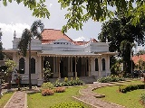
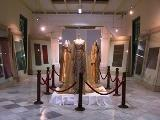
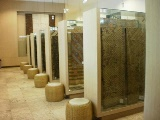
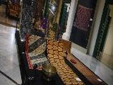
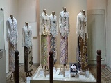
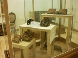
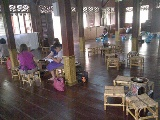

<div class="upage hidden black" id="tekstil">
            <div class="upage-outer">
                <div class="uib-header header-bg container-group inner-element uib_w_80" data-uib="layout/header" data-ver="0">
                    <h2>Wisata Jakarta</h2>
                    <div class="widget-container wrapping-col single-centered"></div>
                    <div class="widget-container content-area horiz-area wrapping-col left"></div>
                    <div class="widget-container content-area horiz-area wrapping-col right">
                        <button class="btn widget uib_w_81 d-margins mustard btn-default" data-uib="twitter%20bootstrap/button" data-ver="1" id="bckmt"><i class="glyphicon glyphicon-chevron-left" data-position="icon only"></i>
                        </button>
                    </div>
                </div>
                <div class="upage-content ac0 content-area vertical-col left" id="page_62_4"></div>
                <!-- tab -->
                <div class="container">
                    <h3>Museum Tekstil</h3>
                </div>

                <div id="exTab2" class="container">
                    <ul class="nav nav-tabs">
                        <li class="active">
                            <a href="#33" data-toggle="tab">Beranda</a>
                        </li>
                        <li><a href="#34" data-toggle="tab">Informasi</a>
                        </li>
                        <li><a href="#35" data-toggle="tab">Fasilitas</a>
                        </li>
                        <li><a href="#36" data-toggle="tab">Peta</a>
                        </li>
                    </ul>

                    <div class="tab-content ">
                        <div class="tab-pane active" id="33">
                            <h3>Deskripsi Museum Tekstil</h3>
                            <br>
                            <center>
                                
                            </center>

                            <p>Museum Tekstil Jakarta didirikan pada tahun 1976 sebagai hasil dari upaya bersama yang dipelopori oleh Gubernur Jakarta saat itu, Ali Sadikin. Museum ini didirikan untuk menghormati Ibu Negara, Ibu Tien Soeharto dan diresmikan
                                pada tanggal 28 Juni 1976. Museum Tekstil merupakan sebuah cagar budaya yang secara khusus mengumpulkan, mengawetkan, serta memamerkan karya seni yang berkaitan dengan pertekstilan Indonesia. Bertempat di Jalan Aipda K.S.
                                Tubun No.4, Kecamatan Tanah Abang, Jakarta Pusat, museum ini secara resmi dibuka pada tanggal 28 Juli 1976 dan berdiri dengan menempati gedung tua di atas areal seluas 16.410 meter persegi. Museum Tekstil Jakarta mengajak
                                pengunjung untuk turut aktif menciptakan hasil karya sendiri.</p>

                            <div class="container">
                                <div id="myCarousel19" class="carousel slide" data-ride="carousel">
                                    <!-- Indicators -->
                                    <ol class="carousel-indicators">
                                        <li data-target="#myCarousel" data-slide-to="0" class="active"></li>
                                        <li data-target="#myCarousel" data-slide-to="1"></li>
                                        <li data-target="#myCarousel" data-slide-to="2"></li>
                                    </ol>

                                    <!-- Wrapper for slides -->
                                    <div class="carousel-inner" role="listbox">
                                        <div class="item active">
                                            
                                        </div>

                                        <div class="item">
                                            
                                        </div>

                                        <div class="item">
                                            
                                        </div>

                                        <div class="item">
                                            
                                        </div>

                                        <div class="item">
                                            
                                        </div>

                                        <div class="item">
                                            
                                        </div>

                                        <div class="item">
                                            
                                        </div>

                                        <div class="item">
                                            
                                        </div>

                                    </div>

                                    <!-- Left and right controls -->
                                    <a class="left carousel-control" href="#myCarousel19" data-slide="prev">
                                        <span class="glyphicon glyphicon-chevron-left"></span>
                                        <span class="sr-only">Previous</span>
                                    </a>
                                    <a class="right carousel-control" href="#myCarousel19" data-slide="next">
                                        <span class="glyphicon glyphicon-chevron-right"></span>
                                        <span class="sr-only">Next</span>
                                    </a>
                                </div>
                            </div>

                            <!-- end slider -->

                            <h3>Koleksi Museum Tekstil</h3>

                            <p>Museum Tekstil membagi koleksinya dalam beberapa kelompok, yaitu koleksi kain tenun, batik, koleksi kontemporer, koleksi campuran, peralatan pembuatan batik/tenun dan lainnya. Dari koleksi tersebut dapat dilihat dan dipelajari
                                perkembangan motif-motif kain tradisional Nusantara dari masa ke masa. Awalnya, koleksi Museum Tekstil berasal dari sumbangan Wastraprema dan berhasil mengumpulkan sekitar 500 koleksi. Penambahan koleksi hingga kini dilakukan
                                dengan pembelian oleh Dinas Museum dan Sejarah atau Dinas Museum dan Pemugaran atau Dinas Kebudayaan dan Permuseuman, serta sumbangan dari masyarakat baik individu maupun kelompok. Koleksi museum terdiri dari benda-benda
                                yang ada hubungannya dengan dunia pertekstilan Nusantara dari akhir abad ke-18 sampai masa kini.</p>
                            <p>Batik menjadi koleksi utama yang ditampilkan di Museum Tekstil. Di museum ini, wisatawan bisa melihat-lihat berbagai pola kain batik mulai dari yang sederhana hingga yang paling kompleks. Batik khas Yogyakarta, Pekalongan,
                                Solo, Cirebon, Madura, Riau, hingga Palembang semuanya dapat ditemukan di Museum Tekstil Jakarta.</p>
                            <p>Kini terdapat sekitar 1.966 benda koleksi Museum Tekstil yang terdiri dari 697 kain batik, 783 kain tenun, 101 busana dan tekstil kontemporer, 324 koleksi campuran, dan 62 peralatan pembuatan tekstil.</p>
                        </div>

                        <div class="tab-pane" id="34">
                            <div class="container">
                                <div class="col-md-6 col-sm-6">

                                    <div class="panel-group wrap" id="accordion" role="tablist" aria-multiselectable="true">
                                        <div class="panel">
                                            <div class="panel-heading" role="tab" id="heading26">
                                                <h4 class="panel-title">
        <a role="button" data-toggle="collapse" data-parent="#accordion" href="#collapse26" aria-expanded="true" aria-controls="collapse26">
         Waktu Operasional
        </a>
      </h4>
                                            </div>
                                            <div id="collapse26" class="panel-collapse collapse in" role="tabpanel" aria-labelledby="heading26">
                                                <div class="panel-body">
                                                    <h4>Selasa - Minggu</h4>
                                                    <p>09.00 - 15.00 WIB</p>
                                                </div>
                                            </div>
                                        </div>
                                        <!-- end of panel -->

                                        <div class="panel">
                                            <div class="panel-heading" role="tab" id="heading27">
                                                <h4 class="panel-title">
        <a class="collapsed" role="button" data-toggle="collapse" data-parent="#accordion" href="#collapse28" aria-expanded="false" aria-controls="collapse28">
          Tiket Masuk
        </a>
      </h4>
                                            </div>
                                            <div id="collapse28" class="panel-collapse collapse" role="tabpanel" aria-labelledby="heading27">
                                                <div class="panel-body">
                                                    <!-- list info -->
                                                    <div class="list-group">
                                                        <a href="#" class="list-group-item list-group-item-info">

                                                            <h4>Perorangan</h4>
                                                            <br>
                                                            <p>Anak - anak</p>
                                                            <p>Rp 2.000</p>

                                                            <br>
                                                            <p>Mahasiswa</p>
                                                            <p>Rp 3.000</p>

                                                            <br>
                                                            <p>Dewasa</p>
                                                            <p>Rp 5.000</p>
                                                        </a>
                                                        <a href="#" class="list-group-item list-group-item-info">

                                                            <h4>Rombongan</h4>
                                                            <p>Minimum 20 orang</p>
                                                            <br>
                                                            <p>Anak - anak</p>
                                                            <p>Rp 1.000</p>
                                                            <br>
                                                            <p>Mahasiswa</p>
                                                            <p>Rp 2.500</p>
                                                            <br>
                                                            <p>Dewasa</p>
                                                            <p>Rp 3.000</p>
                                                        </a>
                                                        <a href="#" class="list-group-item list-group-item-success">

                                                            <h4>Pelatihan Batik</h4>
                                                            <br>
                                                            <p>Wisatawan Lokal</p>
                                                            <p>Rp 40.000</p>
                                                            <br>
                                                            <p>Wisatawan Asing</p>
                                                            <p>Rp 75.000</p>
                                                        </a>
                                                    </div>
                                                </div>
                                            </div>
                                        </div>
                                        <!-- end of panel -->

                                    </div>
                                    <!-- end of #accordion -->

                                </div>
                                <!-- end of wrap -->

                            </div>
                            <!-- end of container -->
                        </div>

                        <div class="tab-pane" id="35">
                            <h3>Fasilitas Umum</h3>
                            <br>
                            <!-- tab toilet -->
                            <div class="container">
                                <h1></h1>
                            </div>
                            <div id="exTab1" class="container">
                                <ul class="nav nav-pills">
                                    <li class="active">
                                        <a href="#1l" data-toggle="tab">Toilet / Restroom</a>
                                    </li>
                                    <li><a href="#2l" data-toggle="tab">Tempat Ibadah</a>
                                    </li>

                                </ul>

                                <div class="tab-content clearfix">
                                    <div class="tab-pane active" id="1l">
                                        <h3></h3>
                                        <iframe src="toilet35.html" width="100%" height="700px" frameborder="80" style="border:0" allowfullscreen=""></iframe>
                                    </div>
                                    <div class="tab-pane" id="2l">
                                        <h3></h3>
                                        <iframe src="musola35.html" width="100%" height="700px" frameborder="80" style="border:0" allowfullscreen=""></iframe>
                                    </div>
                                </div>
                            </div>

                        </div>

                        <div class="tab-pane" id="36">
                            <h3>Petunjuk Arah Museum Tekstil</h3>
                            <br>
                            <iframe src="tekstil.html" width="100%" height="700px" frameborder="80" style="border:0" allowfullscreen=""></iframe>
                        </div>
                    </div>
                </div>
            </div>
        </div>
        <!-- end page tekstil -->